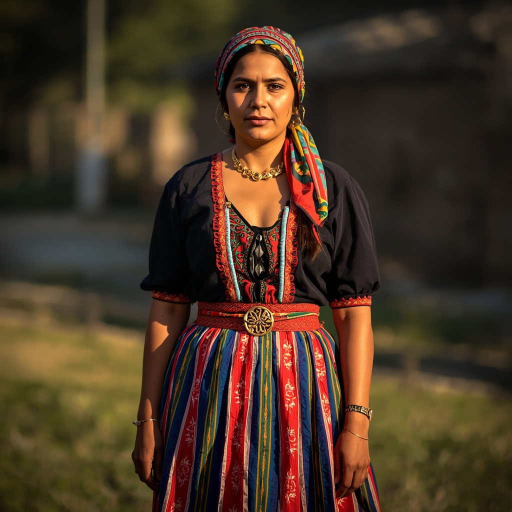

🧑🤝🧑 世界の民族・人びと
People of the World。国境を越えて暮らす人びとを、地域ごとに紹介します。伝統だけでなく、今の暮らしも一緒に。

ロマ
🗣 使用言語
ロマ語(複数の方言)、居住国の言語(ルーマニア語、セルビア語、ハンガリー語、ブルガリア語など)
👥 人口の目安
世界全体で約600万〜1500万人と推定され、ヨーロッパ、特に中東欧・南欧に多く居住するほか、南北アメリカにも大きなコミュニティが存在する
👘 伝統衣装
地域や集団によって異なるが、女性は色鮮やかな長いスカートや頭巾を身につける伝統があり、既婚女性の頭飾りなど身分や集団を示す装いの習慣も見られる。
🏠 住居
歴史的には幌馬車や天幕を用いた移動生活を送る集団もいたが、現在ではヨーロッパ各国で定住生活を送るロマが大多数を占めている。
🍲 食文化
居住する国や地域の食文化を取り入れつつ独自の料理を発展させており、肉料理やパプリカを使った煮込み料理など、バルカン半島の食文化と重なる部分が多い。
🎵 音楽・踊り
各地の音楽文化と融合しながら独自の伝統を築き、ハンガリーのチャールダーシュやスペインのフラメンコ、バルカン半島のブラスバンド音楽などに大きな影響を与えた。リストの「ハンガリー狂詩曲」やブラームスの「ハンガリー舞曲」もロマ音楽に着想を得ている。
🎉 行事・祭り
毎年4月8日の「国際ロマの日」には各地でロマの旗を掲げた記念行事が開かれ、結婚式など人生の節目の行事は音楽と踊りを伴う大切な文化的機会とされている。
🙏 信仰・価値観
定住した国や地域の主流宗教(東方正教会、カトリック、プロテスタント、イスラム教など)を信仰することが一般的で、独自の慣習や民間信仰と融合している場合もある。
📜 歴史
言語学的・遺伝学的研究から、ロマの祖先は北インド(現在のラージャスターン州やパンジャーブ州周辺)にルーツを持つとされ、10世紀頃からペルシアやビザンツ帝国を経て西へ移動し、13〜14世紀にバルカン半島を経由してヨーロッパ各地へ広がったと考えられている。
🏙 現代の暮らし
現在は多くが定住生活を送りながら、鍛冶や工芸、音楽、商業など時代に応じた職業に従事しているが、地域によっては教育や雇用面での格差や偏見が課題となっており、EUなどによる社会的包摂に向けた取り組みも進められている。
🇯🇵 日本との関係
ロマ起源の芸術であるフラメンコは日本でも愛好者が多く、日本フラメンコ協会が活動するなど独自の文化的裾野が形成されているほか、ロマ音楽に着想を得たリストやブラームスの楽曲は日本のクラシック音楽の演奏会でも広く親しまれている。
🌍 関連する国


出典: https://en.wikipedia.org/wiki/Romani_people(2026-09-01時点) / https://ja.wikipedia.org/wiki/ロマ(2026-09-01時点) / https://www.anif.jp/ctt_anif_hajimete.htm(2026-09-01時点)